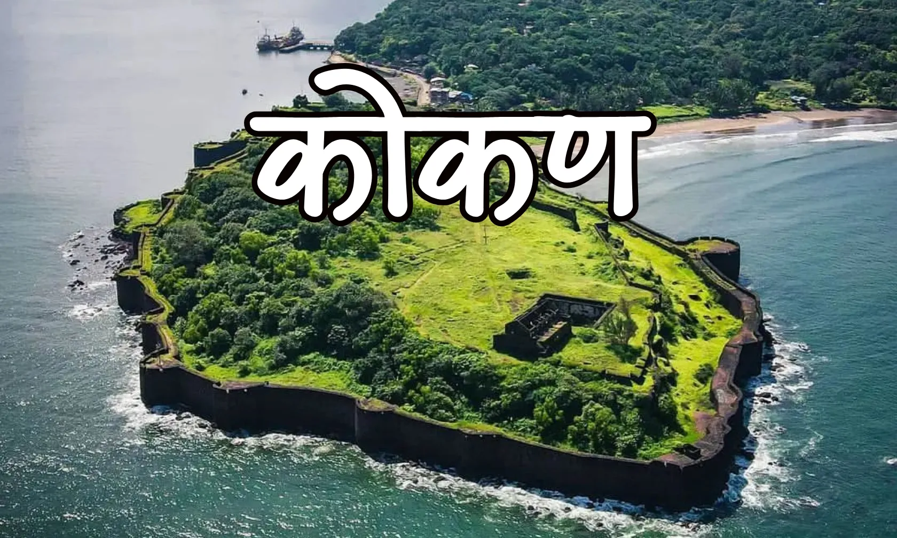
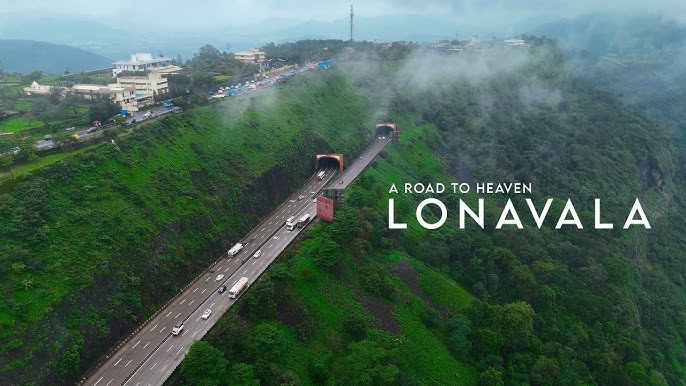

Konkan
The Konkan is a breathtaking, rugged strip of India's western coast bounded by the majestic Sahyadri hills (Western Ghats) to the east and the azure Arabian Sea to the west. Stretching approximately 530 kilometres from Maharashtra down through Goa and into parts of Karnataka.

Lonavala
Lonavala is a popular, scenic hill station in Maharashtra's Sahyadri range (622m elevation), located ~64 km from Pune and 96 km from Mumbai. Famous for monsoon waterfalls, ancient Karla/Bhaja caves, and forts like Lohagad, it is ideal for nature, history, and adventure seekers. Key treats include Chikki (sweet) and pleasant weather from October to February.

Malshej Ghat
If the fragrance of earth after a heavy downpour tantalises your senses to another level, then there’s nothing better than travelling to monsoon destinations in India and satisfying the petrichor in you. So, head to Malshej Ghat for a memorable monsoon vacay. Located in the Western Ghats, Malshej Ghat is home to a rich flora and fauna that looks even more fascinating during the monsoons. You can enjoy a short nature walk, trek or even bird watching activity to collect some everlasting memories.